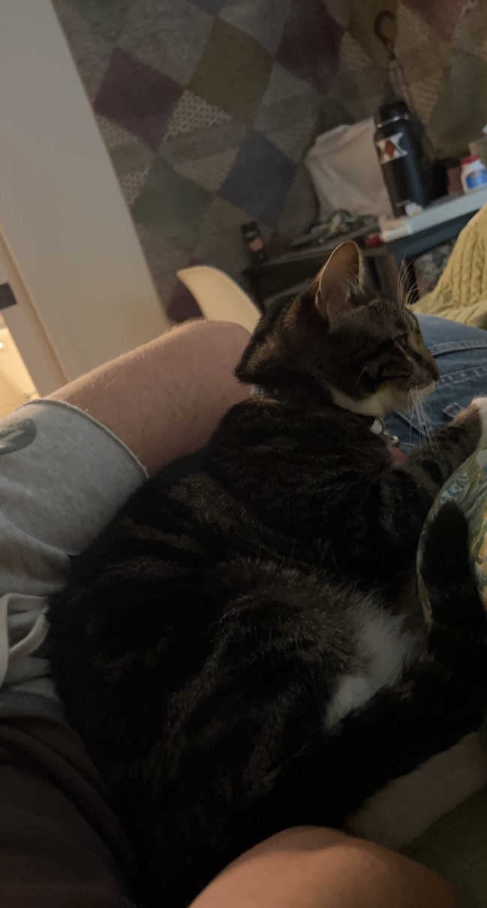
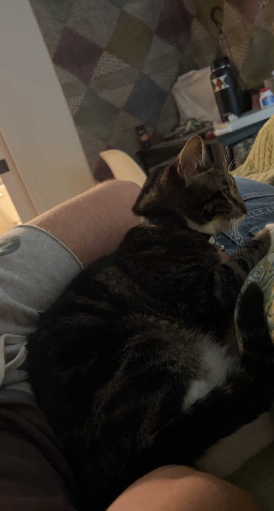

The first two animals, the dogs, are my families dogs, Dougal and Piper, in that order. They are my favorite animals in the whole world, along with my girlfriends cat, Chance.
I've always loved dogs and I can't wait to raise one on my own. I'd also like to get a cat as well, and have the two grow up together.
The two dogs are pictured on the right and my girlfriend's cat is further to the right.
 
